[首爾旅遊] 戰鬥力太弱很可惜的廣藏市場
發布於 July 7, 2023 • 5 分鐘 • 2386 字 • 文章分類:
廣藏市場是我朋友行前就指定要去的地方之一，因為考慮到我們只在台灣換了少少的韓幣（15萬）還需要去明洞換一些錢，所以我把明洞安排在第二天的行程，廣藏市場離明洞不遠，正好是個安排早午餐的好去處！
作為觀光客出發之前找資料是一定要做的事！結論是 65 號是雷店會多塞餐點騙觀光客多付錢，41 號是白老師推薦的「元祖裸起司飯捲」（원조누드치즈김밥），然後就是到了廣藏市場一定要吃的綠豆煎餅跟同行友人想吃的生章魚！
我們這次住在弘大，我熟悉（又熱愛）的二號線！所以去廣藏市場可以直接二號線坐到乙支路四街站，然後從4號出口出來直走，過清溪川再往前一小段路就會看到廣藏市場的入口囉！
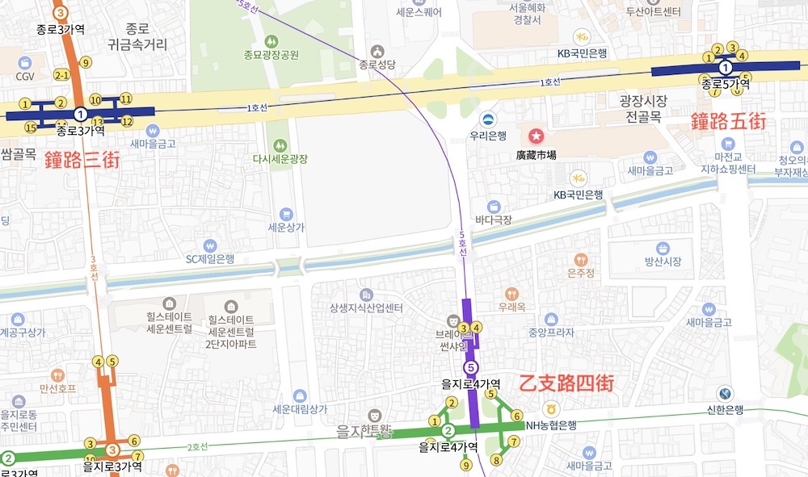
住在二號線跟五號線的人可以跟我一樣坐到乙支路四街4號出口出來，如果住在一號線的人可以坐到鐘路五街站4號出口，住三號線的人坐到鐘路三街站從12號出口出來也行，住在一二三五號線以外的人還是以坐到乙支路四街或是鐘路五街為主囉！
從乙支路四街4號出口這個方向的入口附近好像是以服裝類為主，但穿過小小的入口進去馬上就會看到白種元老師推薦的「元祖裸起司飯捲」！
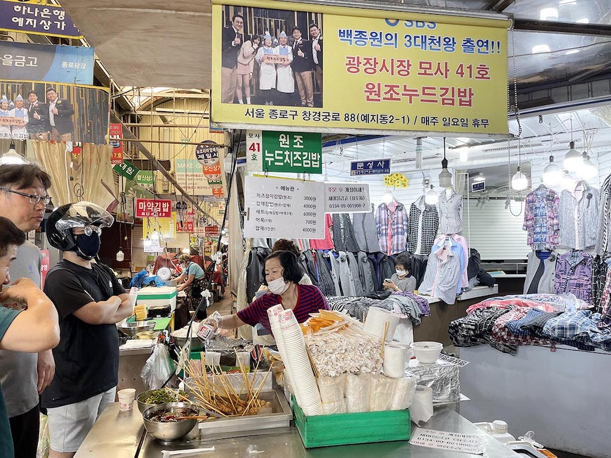
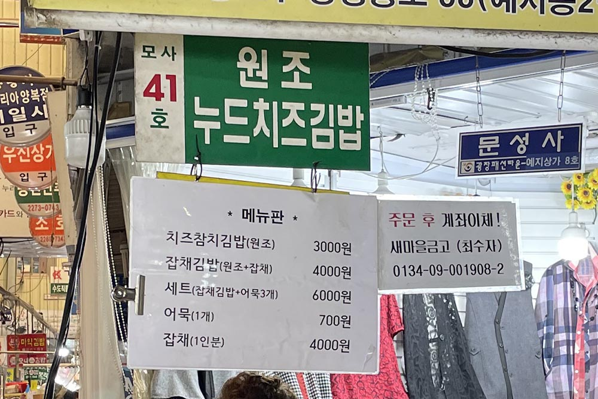
菜單很簡單，就由飯捲、雜菜和魚板組成，由上而下分別是
起司鮪魚飯卷（元祖） 3000 韓元
雜菜飯卷（元祖+雜菜） 4000 韓元
套餐（雜菜飯卷+三支魚板） 6000 韓元
魚板（1支） 700 韓元
雜菜（1人份） 4000 韓元
考慮到等等還要吃綠豆煎餅，直接先點一份飯卷當早餐，如果有想要喝湯的人可以自己拿杯子裝煮魚板的高湯，韓國的路邊攤（布帳馬車）幾乎都是點餐就免費提供魚板湯的喔，只是需要自助一下🤣
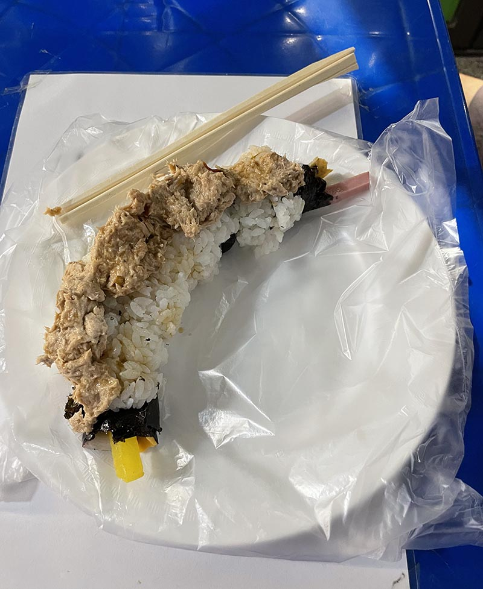
之所以叫裸飯卷就是因為跟一般的飯卷將飯包在海苔內不同，他的飯是包在海苔外面，海苔內包著飯卷內常見的醃蘿蔔、火腿、蟹肉棒、魚板和起司，捲起來之後上面再蓋上鮪魚，攤子旁邊有醬油跟辣椒之類的調味可以自己加。
對我來說就是熟悉的好吃韓式飯捲味道，但連我第一次來韓國的朋友都說好吃那就應該是好吃吧😝
比較有趣的是，我們到的時候除了攤子上正在包飯卷的姨母，旁邊放著雜菜的攤子也有一個姨母在那邊忙東忙西，我們原本以為是這個攤子上的另外一個姨母，但後來發現，好像是旁邊攤位的姨母自己在弄早餐吃啊…🤣
吃完飯卷穿越過一大堆賣布跟衣服（有很多韓服）的攤位之後，我們直奔「順姬家」（순희네빈대떡）吃綠豆煎餅。
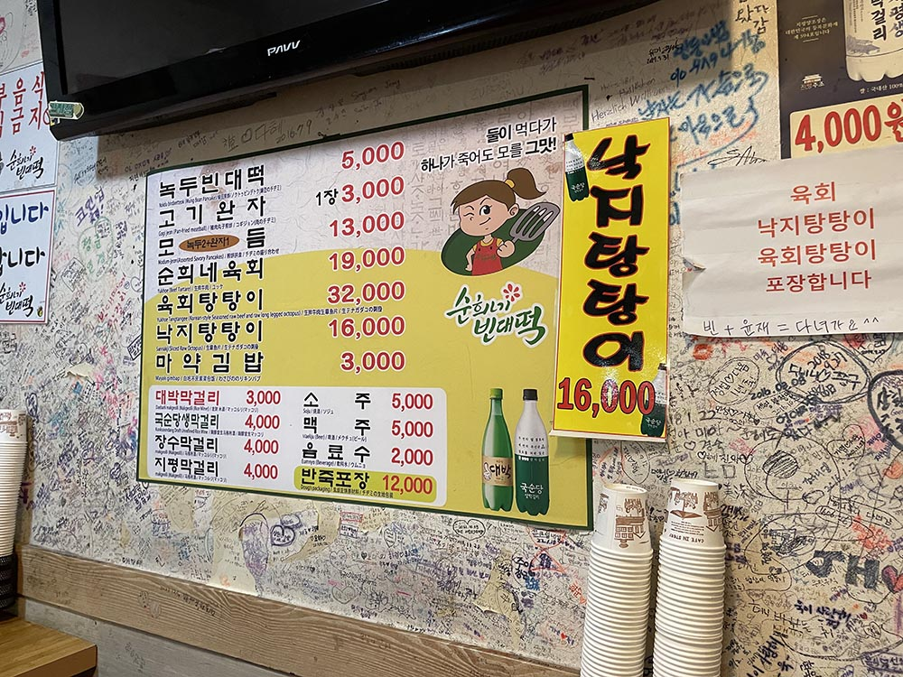
順姬家除了綠豆煎餅跟肉餅之外，還有生牛肉、生章魚、麻藥飯卷和各種品牌的馬格利（막걸리）。
之前在韓國唸書時來過一兩次廣藏市場，當時留下的感想是我下次再也不要以為自己能喝得了酒點馬格利，以及天啊我想吃甜的點了紅豆粥但他竟然是鹹的好崩潰！
結果！！！
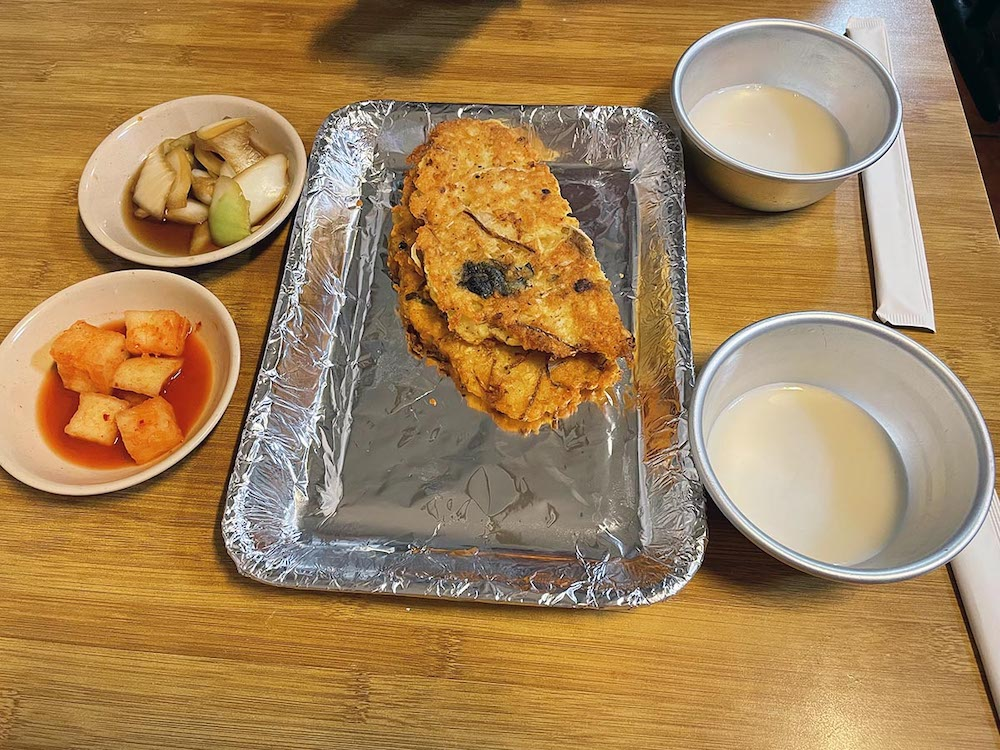
因為朋友想喝還是點了（上圖右邊那兩碗米白色的就是馬格利酒），並且最後還是很浪費地剩下半瓶，因為我這個戰五渣只喝了三口（不是虛詞，是真的三口）。
綠豆煎餅只點了一塊看起來很空虛，因為重點是活章魚生拌牛肉（육회탕탕이）！
我其實一直對生章魚非常抗拒，以前也不敢吃生牛肉，是直到有一次跟朋友去日本玩的時候，店員推薦了他們的生牛肉，強壓著恐懼吃了之後真香了🤣
這次是同行友人說他真的很想嘗試一次，剛好順姬家有，就一起點啦！
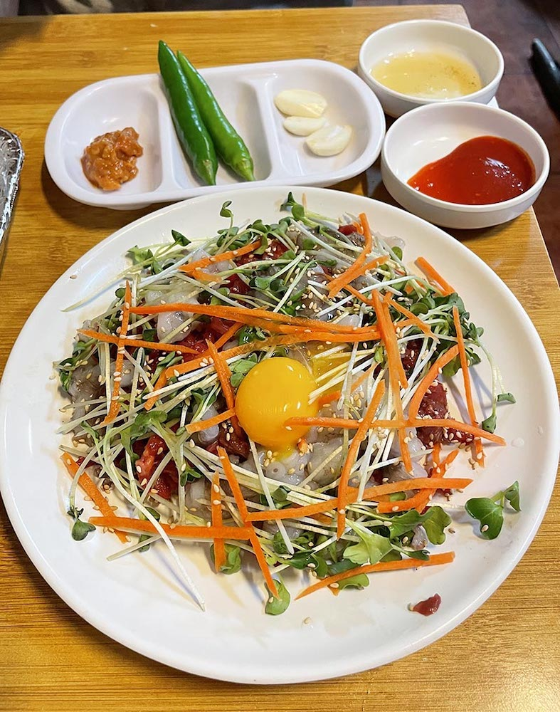
送上來的時候章魚還在蠕動我真的…很有障礙🥲 但比起那種整隻活的小章魚，這種已經切斷的至少我感覺應該對我的氣管沒有什麼威脅…吧…
附的醬有醋醬（초장）、芝麻油+鹽、大醬、大蒜跟青辣椒，我基本上只沾芝麻油+鹽，烤肉沾這個也很好吃喔！開吃之前先把它連蛋黃一起攪拌開，在攪拌的時候發現吸盤還吸得很緊啊章魚先生🐙
第一口先從相對熟悉的生拌牛肉開始，調味很清爽但比較有嚼勁。已經切成段的生章魚其實也沒有這麼可怕，至少我可以整口放進嘴巴裡好好咀嚼，不用擔心他的腳鑽出來（恐怖故事），生章魚就比生拌牛肉更有嚼勁了，整盤吃下來咀嚼肌有夠累😆
生拌牛肉就是我偶爾會想吃一下的東西，生章魚的話…味道不錯但並沒有到愛的程度，至少我不會想著下次一定還要吃🤣 整盤最好吃的就是墊在下面的水梨，真的有夠甜又多汁，不愧是韓國水梨！
戰鬥力薄弱的我們吃完順姬家已經很飽，原本想著如果還吃得下可以去吃牛肉拌飯、大麥拌飯之類的真的是想太多了😆
之後就在廣藏市場裡面逛逛散步消化，挑了一間是兩個姐姐在顧的攤子買了草莓乾，姐姐很熱情地請我們試吃草莓乾跟芒果乾，還跟我們大推芒果乾好吃。
me be like：我台灣人在韓國買芒果乾我瘋了嗎？🤣
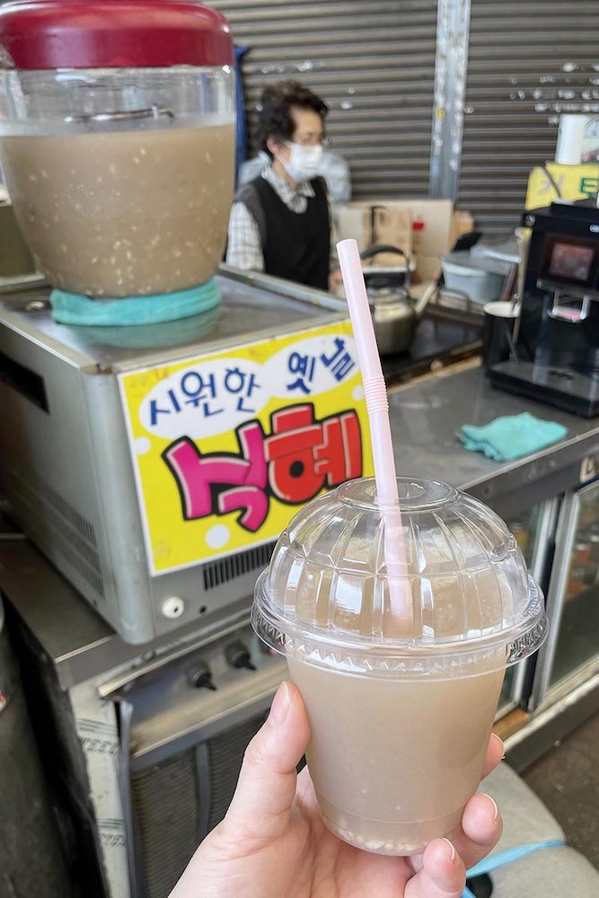
推薦我朋友試喝看看的「甜米露」（식혜），裡面都是大杯的，跑來門口的攤位買小杯的🤣 小杯的一杯1500，大杯的大概是2500左右吧有點不確定！
甜米露攤位對面有一間甜點店，我看了半天看不出他賣的是什麼，後來才發現竟然是鼎鼎大名的 Cafe Onion 啊…
廣藏店只賣千層派，店面看起來非常地不起眼，我跟朋友都對千層派沒有什麼興趣，倒是隔壁的10圓燒我朋友很好奇。
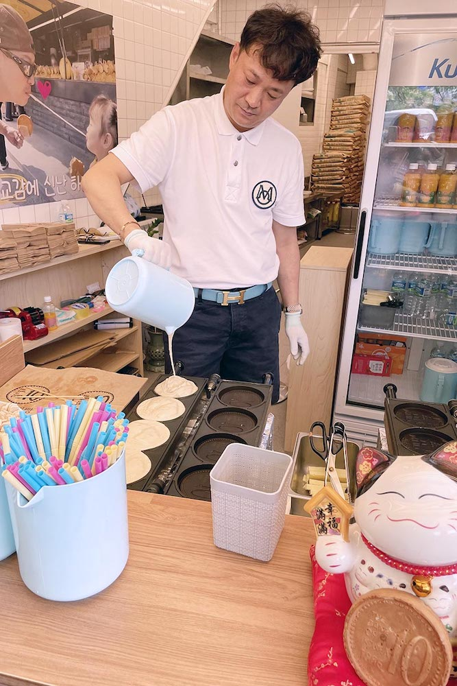
排隊的時候偷聽老闆跟其他顧客聊天，老闆說他們才是正宗從慶州來的，買草莓乾的那邊也有一兩間10圓燒的攤販，我猜可能是在跟裡面的其他10圓燒店比吧，只是我也不知道原來10圓燒還是慶州名產啊🤣
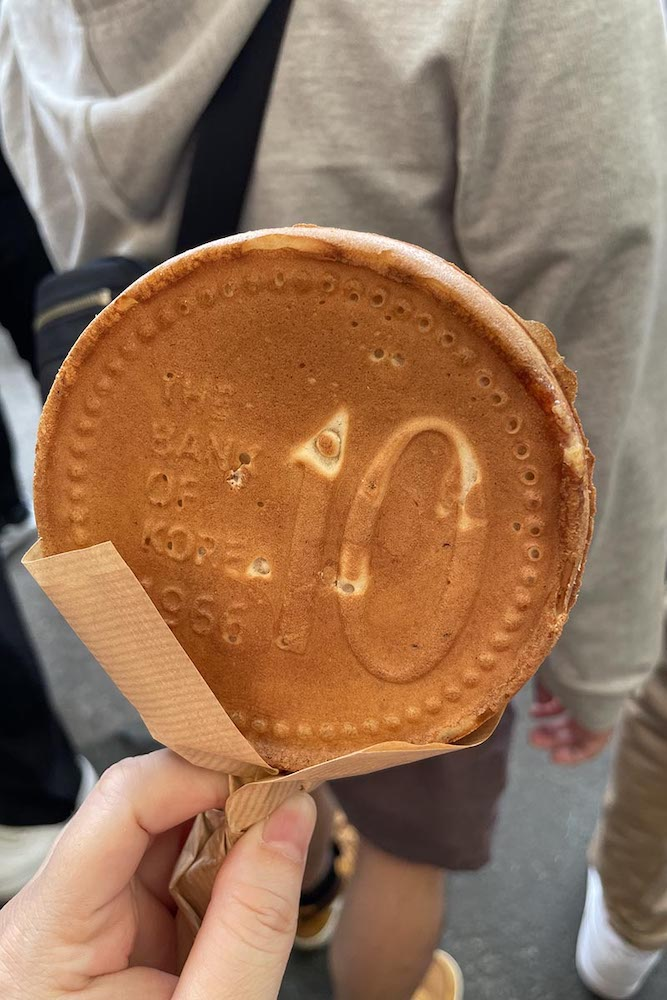
10圓燒本尊！據說因為跟10圓韓幣圖案一模一樣還曾經被韓國央行認為是侵權，並說「會損害貨幣的尊嚴和可靠性」，據說還因此讓10圓燒知名度大開🤣
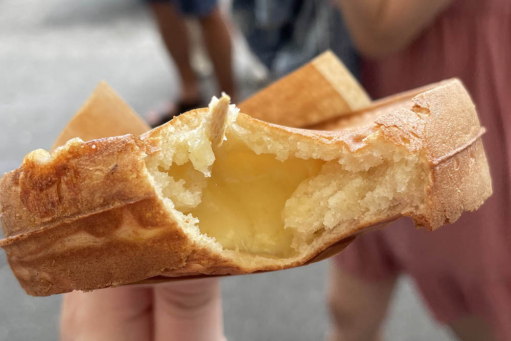
一個 3000 韓元，裡面包了滿滿的起司，會牽絲的那種，鹹甜鹹甜的口味，蠻好吃的，說像車輪餅但是完全不一樣的東西。
最後就用10元燒結束了我們的廣藏市場之旅，因為還很飽加上我跟朋友兩個人都很能走，就決定直接從廣藏市場散步去明洞啦！
廣藏市場好吃的東西很多，但人太少或是戰鬥力不足真的能吃的很有限，只能多一些人一起來或是多來幾次了！